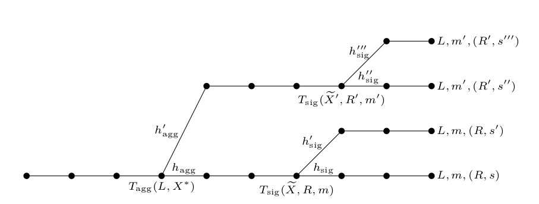

Contents
Pictured: a MuSig honest signer oblivious to the Wagner attack going on around it
Preamble
If you just want to know the practical significance of MuSig2, you're in the wrong place. I'd suggest this short blog post by two of the authors; for more detail read the introduction of the paper itself (MuSig2). Those who prefer a summary via video might like to watch Ruffing's presentation at RWC2021.
A note about the current status of the MuSig2 paper: it is going to be updated shortly with some optimisations and changes to aspects of the security proofs (and presumably typo fixes), but those changes won't really affect what's discussed here. Still, the motivated reader will want to look out for that update. And I remove this comment after that time. (2021-04-13)
Those code-inclined might also find this gist I wrote, which goes through the steps of the MuSig2 algorithm, of interest.
But this post is an investigation of the security argument, i.e. how we can (or can't) be sure of the security of these type of Schnorr-based multisig constructions, as we intend to use them in Bitcoin.
Technically speaking it's about the unforgeability of MuSig(2) signatures, not about soundness, so forgive the title, but who can resist a good pun ;)
The story of the attempt to create a provably secure version of this is fairly long and complicated, as you are about to see (if you haven't already stopped reading. Seriously, consider it).
It will relate back to at least 2 earlier blog posts, this on the Schnorr signature reduction to ECDLP and this to Wagner's attack.
Science fiction Schnorr, again
(You didn't read that first blog post? Oh well, it's your funeral!)
The TLDR on Schnorr signature security:
- EUF-CMA : it means we want to prove the digital signature succeeds in defending itself against all-out assault: the attacker can force us to spit out valid signatures on a bunch of messages that he chooses, before having to forge a signature on a new one (these are called "signing oracle queries"); and he gets to choose also the message that he's going to make a forgery one. ("Existential Unforgeability under Chosen Message Attack").
- Reduction to ECDLP: we control the attacker's environment and try to force him to emit a signature forgery, but we fork his execution (he's an algorithm, not a person), so he emits it twice, and we extract the private key and that counts as an ECDLP break (crudely) - this technically allows us to reduce to Schnorr Identity Protocol (as in previous posts, heretofore SIDP), and from there to ECDLP, but, details.
- Random oracle queries - the key idea is to program the random oracle in such a way as to make signature queries verify, but as the attacker is a black box, we have to kind of "guess" which of the attacker's random oracle queries correspond to the successful forgery and fork there, which leads to a kind of 1/(number of hash queries) probability of success factor (and corresponding tightness loss, see next); see "r-impersonation eavesdropping attack" in Boneh and Shoup (Section 19.2.1) for details.
- Non-tight reduction: it just means that because you fork (and because of the previous bullet point), your chance of success in cracking ECDLP is not the same as the attacker's chance of success in forging a signature; so the difficulty of the two tasks is not directly equivalent (like ... at all. But it's still a very meaningful result). Again, see here for kinda-sorta-quantitative details.
The downfall of Freddy the Forger
In Forklandia, those arrested by police are not required to give up the password to their laptop, but they are required to give an encryption of their password (and/or any other data) when police request it. If in future it is decrypted and found to be invalid, the punishment is to be cut cleanly in half.
Freddy the Forger is in the interrogation room and the detective makes a slightly strange request: he asks for the password to the laptop (which Freddy cleverly switched off before police grabbed it), multiplied by the current date and time ...
Freddy - a Rain-Man-style arithmetic savant by the way - before continuing, comes up with an encryption key: a 256 bit integer that he easily memorizes.
...
Consulting his lawyer (but not his calculator perhaps), after some thought, Freddy responds: "here is the encrypted value of (password-as-256-bit-integer)x(current-unix-time-in-seconds): 123....", smiling smugly since he remembers from his Cryptography 101 that the one time pad is uncrackable (well, he added the encryption key, mod a prime, not xor-ed it, but let's go with it) - so since the encryption key he used for this is something he just made up on the spot, there is no way they can figure out the password for the laptop right now.
...
Suddenly the detective thrusts a weird object into his eyes and a light flashes ...
Unbeknownst to Freddy, the police in Forklandia have advanced neuralyzer tech which allows them to switch victims' brain states back to a point some 60 seconds ago.
...
Consulting his lawyer (but not his calculator perhaps) ...
The ending of this story isn't too hard to figure out. If the detective's neuralyzer tech was precise enough to switch Freddy's brain back to exactly the right moment, then in his brain he already has the 256 bit encryption key, i.e. it's the same as the last time.
So when he does (encryption key + (password x date)), IF the date is different even by 1 second, the output that he gives to the detective will also be different. And that will reveal the password:
Output2 - Output 1 = (key + (date2 * pass)) - ( key + (date1 * pass)) = (date2 - date1) * pass
... and Freddy is undone, the detective now has all his (uh .. forged?) bitcoin! Or NFTs perhaps.
The simplest way to hide a secret while using it is to "blind". If you secret is \(x\) mod m and you add \(r\) mod m, \((r+x)\) mod m is completely disconnected (I mean, kinda .. let's ignore details here).
If my secret is 43 mod 101 and I add a random value in (0..100) - let's say, 76, then i output (76 + 43 mod 101 = 119 mod 101 = 18 mod 101). The number 18 is as random as the number 76 was - this would be true even if my secret value \(x=43\) was not random (even though they usually are).
In the SIDP, we don't of course just add a random value to blind - we first commit to it (\(R\)), then do the blinding using it (\(r\)), in the response to the challenge.
The great strength of this simple method is, paradoxically, its fragility: the reason it's so easy to prove that this is sound (that is to say, only a real owner of the secret can answer the challenge), is exactly because even one single reuse of the blinding value (\(r\)) is enough to create a total break of the protocol (here total break is actually a technical term: it means recovery of the private key).
Proving it to be sound here means exactly the method that was the topic of this post - the security of the protocol is "reduced" to that of the Elliptic Curve Discrete Logarithm Problem, and reduced directly, in "one extra step", by forking the hypothetical adversary to create two protocol runs with the same randomness \(r\).
If you have only one extra unknown, \(r\), in your equations for the secret \(x\) (the other unknown), then it only requires two of them to solve it.
We could say that the protocol is very "close" to ECDLP because the level of manipulation required on the adversary who can break the protocol is so small in order to achieve the goal of ECDLP cracking.
Similar to this fictional adversary who can break ECDLP, our fictional (anti?)hero only had to be neuralyzed once and convinced to re-run his protocol with any different date.
In contrast take for example the protocol described in my Bulletproofs writeup section 3.3 where we need a whole set of transcripts, retrieved by a whole set of forking of the protocol at the same point - not to mention a more complex construct, where the forking might be in multiple branches, see e.g. the original MuSig paper (which we will talk more about shortly).
Imagine the idea of a SIDP without the first step - i.e. imagine that the Prover wants to prove that he knows the secret key x, but doesn't bother to actually commit to his "blinding factor" \(r\), i.e. he doesn't send \(R = rG\), or \(H(R)\) or anything similar. Instead, he just sends \((R, s)\) where \(sG = R + eP\).
The problem is obvious, i.e. that this protocol does not force him to know the corresponding \(x\). He can just choose \(s\) at random and calculate \(R = sG - eP\), since all the values on the RHS of that equation are public. He will never even know \(r\), let alone \(x\), but still "verify" in this broken protocol.
From the point of view of forking this also makes sense - if there is no commitment step in the protocol, we cannot fork immediately after it and get the prover to generate two transcripts with the same \(R\), in this case that much is trivial, but of course it's a giant hole in any "proof of soundness" of such a protocol. The "back-solvability" of \(R\) for any given \(s\) hides in that giant hole.
Schnorr Multisignature
Let's quickly set the stage for thinking about the same issues in a multisig context. First remember we are talking about Schnorr signatures:
\(s = r + ex; \quad e = H(P||R||m)\), signature published as: \((R, s), \quad R = rG\)
and remember that the Fiat Shamir heuristic was used to convert the SIDP to a signature scheme (setting the challenge to the hash of the conversation up to that point).
Next, remember Schnorr aggregatability leads to an intuitive, but wrong idea of Schnorr multisig:
\(s_k = r_k + e x_k\) ; aggregate signature: \(s = \sum s_k\) with nonce \(\sum r_k\) and private key \(\sum x_k\)
Before racing ahead and just glibly saying "that's susceptible to key subtraction", we want to frame why this attempt fails, in terms of our security discussions above.
The problem for multisig is that it introduces a whole new dimension to the discussion, on two fronts, if we aggregate or simply add curve points. If you don't understand anything else in these technical arguments, at least understand these two cornerstone points:
Problem 1. If the signing is on the sum of the public keys, then it doesn't commit to the public keys individually. Concretely if you use the hash challenge \(H(P_{agg} || R_{agg} || \textrm{message})\), then a rogue signer doesn't have to decide his public key upfront (at least, one of them), which is a bit of an oopsie. The attacker just sets their public key to some key you know, minus all the other keys, and voilà, they have the private key to control the entire multisig. But wait, you say, that's silly, you can easily commit to each public key individually, with \(H(P_1 || P_2 || R || m)\), disabling this attack. This is where you have to remember the special goal of MuSig, rather than just any old aggregated signature: we're trying to create signatures indistinguishable from single key (Schnorr) signatures, because:
- it makes verification way better
- it scales way better on the blockchain, and
- it's more private.
This was our real goal. So we want to preserve a verification equation like this: \(sG \stackrel{?}{=} R + H(P|R|m)P\). We need \(P\) to be aggregated.
So Problem 1 is a big problem, and the first one MuSig addressed.
Problem 2. If the signing uses the sum of the nonces of each party (so \(R_1 + R_2\)) as its nonce \(R\), there is a similar but slightly different problem to Problem 1. There is effectively a kind of race condition - who yields up their commitment first? The attack scenario usually considered is, naturally, the most pessimistic one: let's assume that all of the \(N\) participants are controlled by the attacker, except one - the one we're trying to attack. This honest participant will have index 1, and the attacker controls the participants \(2 \ldots N\). (We will mostly just use \(N=2\) here because it's easier to write, but occasionally generalise to any number).
Since, in an ordering of revelation of commitments, one has to be last, we pessimistically assume that the last one is .. not 1.
Pictured: In the simplest concept of Schnorr aggregated signatures, if Alice is first, Bob (uh, Roberta) gets an advantage.
And that means the attacker definitely has the honest signer's commitment before choosing (at least the last of) his own.
So, then .. where exactly do we fork? If we fork after the honest signer committed, it fixes her nonce (\(R_1\)) but it doesn't fix the total nonce (\(R_{agg} = R_1 + R_2\); say 2 keys for simplicity), because the dishonest signer might not make the same choice of random \(r_2\) twice. So you would have:
\(s = r_{agg} + e * x_{agg}\)
\(s' = r_{agg}' + e' * x_{agg}\)
... since the \(r_{agg}\) values are not the same, there are three secret values (the other being the \(x_{agg}\)), and two equations, so we're stuck.
Since we can't extract the private key from a fork, we can't prove security is "reducible" to ECDLP here (this is a GROSS oversimplification, but we'll be expounding more on this theme as we go).
Fixing Problem 1
MuSig did this in a way that is almost (but not really!) obvious: force a fixing of the individual participants' pubkeys using a hash, by creating a "meta-pubkey" (I just made that up but I think it's OK). This is really no different from applying the Fiat Shamir transform to the basic Sigma protocol in SIDP and similar; you can't send a challenge because it's not interactive, so you just hash the "starting conditions": the full set of keys and the specific key that the participant is claiming, and throw that into the output.
So, if Alice has key \(P_1\) then she'll create a meta-pubkey: \(H(\{P_1, P_2\}||P_1) P_1\). Here \(\{\}\) is just handwavy, the point is we put the whole set of keys, even if there are 15 and not 2, into the hash input, as well as specifically committing to her individual starting key \(P_1\). Now if she knows the private key \(x_1\) (hopefully she does!), then she still knows the private key of the meta-pubkey: it's \(H(L||P_1)x_1\) (from now on, we'll call the set of keys \(L\)). By this fancy footwork we arrive at a situation where the verification key will be the sum of the meta pubkeys, so it'll be a single pubkey as a normal verification, let's call it \(\widetilde{P}\) . But each participant will still (a) control their share of the private key and (b) be forced to commit their key upfront, solving Problem 1.
There is a detail I glossed over, but I felt somewhat entitled, as I'd already described it here. If you're slightly sloppy here and only commit to your key, not the whole set, i.e. you use this for the meta-pubkey: \(H(P_1)P_1\), you're still vulnerable to Wagner's attack, as detailed in that link. That's because you didn't fix the "rules of the game" (the starting condition) for your adversary. We'll see this coming up several times, here, again.
Fixing Problem 2
Here's where we start diving into the weeds.
I will not attempt to describe the details of the original conception of a 2-round multisig as was first published in the first version of the MuSig paper; note that the existing version of that paper already patched up the original error, using commitments to nonces and reverting to a 3-round protocol. But to see the flow of reasoning, we need to start from that beginning. Following the terminology of the MuSig2 paper, we'll call this earlier idea InsecureMusig.
2-round multisig in InsecureMuSig
The idea was to follow a flow just as in Fig 1, except the partial signature Alice returns is now:
\(s_1 = r_1 + H(\widetilde{P}||R||m)H(L||P_1)x_1\)
i.e. she's signed on her meta-key, while the challenge \(e\) in the usual Schnorr sig) is of course, "over" the combined key \(\widetilde{P}\). The problem here is, as mentioned, how do you use a forking based proof to extract a discrete log, if you can't fork at the value of \(R\), because Bob (the notional attacker) hasn't committed to his share of it at the time Alice sends her \(R_1\) value?
The solution in this paper (and indeed in the following MuSig2) is to fork twice.
We fork the execution of the adversary at the random oracle query on \(H(L, P_1)\) and then on the query to \(H(\widetilde{P}||R||m)\) (which we sometimes call \(c\) for brevity). This makes four, instead of two, versions of the adversary, each of which outputs a complete forged signature which differ in the ways required to extract the secret key \(x_1\). There are four unknowns: the two different \(r\) values (each a sum of \(r_1\) and \(r_2\)), and the secret keys \(x_1, x_2\) (if \(N>2\) just think of \(x_2\) as the other keys, which we don't try to get), and four equations:
The 4-way fork
(1) \(s = r + c(a_1 x_1 + a_2 x_2)\)
(2) \(s' = r + c'(a_1 x_1 + a_2 x_2)\)
(3) \(s'' = r' + c''(a_1' x_1 + a_2 x_2)\)
(4) \(s''' = r' + c'''(a_1' x_1 + a_2 x_2)\)
The reader can verify that:
\(x_1 = \frac{\frac{(s''' - s'')(c'-c)}{(s' -s)(c'''-c'')}}{(a_1' - a_1)}\)
... noting that all values on the RHS have been shared indirectly by the forger, or are publically calculable).

Fig 4 reproduced directly from MuSig2 - note, \(X\) is used in place of \(P\), the \(s\) values are output on the extreme RHS, the \(T\) queries are the random oracle queries (we use just \(H\) in this document).
This whole process looks pretty out-there at first glance.
Notice: we can't just fork at the second point, the random oracle query to \(H(\widetilde{P}, R, m)\): that would allow us to extract the combined private key: \(a_1 x_1 + a_2 x_2 = \widetilde{x}\), which is all well and good, but it's not what we're asking the adversary to do: if he gives \(\widetilde{x}\), the private key to \(\widetilde{P}\), we cannot get from that the goal, the value \(x_1\), which is the discrete log of \(P_1\), Alice's pubkey (notice the subtlety: the attacker, if he knew \(x_2\), could get \(x_1\); but the \(s\) values he reveals to us (that's all we ask of him, provide a signature forgery), are not enough for us to extract it). Meanwhile the problem with only forking at the first query, the query to \(H(L, P_1)\) is what we already described: that doesn't force \(r\) to be a single value, so we don't get to extract anything at all. We unfortunately need both forks.
The security proof of InsecureMusig
What the signing oracle looks like for such proofs
As a refresher, in the proof of security of the single Schnorr signature, we allow (see: EUF-CMA above) the forging adversary to query a "signing oracle" a fixed number of times, on arbitrary message/key pairs that are of course not the same one that it finally spits out as forgery. This will involve querying the hash function used for signing. This is pretty simple - "here's a message (the key is implicit; there's only one), return me an \(\)(R, s) pair".
Clearly it's a lot messier in multisig. The signing oracle (henceforth SO) is something provided to the adversary, who has to interact with it (note of course that our "reduction" (playing the role of Alice), is going to simulate SO, not actually be it, since it doesn't have the key).
The adversary wants to be given an \(s_1\) (a partial signature for Alice as per our convention), but he must follow protocol: first send \((L, m)\) to SO; SO does its simulation trick - choose \(s_1\) at random, but patch the RO to make it work: set \(R_1 = s_1G - c a_1 P_1\), where \(c\) is the patched RO value for \(H(\widetilde{P}||R||m)\) ... but wait, we don't know what \(R = R_1 + R_2\) will be yet! So SO can't complete the process of sending \(R_1\) to the adversary, who then figures out his \(R_2\) and sends that back, and then the oracle would spit out \(s_1\) to satisfy the query.
We're stuck.
The OMDL as a variant of the (EC) Discrete Logarithm Problem.
InsecureMusig tried to get round this problem by moving up one rung in the ladder of hardness assumptions. Put simply, the One More Discrete Logarithm Problem (OMDL for short), defined I think initially here in Section 7, asserts that it is computationally hard to provide, as output, \(x+1\) discrete logarithms if you are given, as input, access to an oracle that'll hand out \(x\) discrete logarithms.
A little more precisely: an adversary \(A\), given as input \(q+1\) randomly chosen group elements, and also given access to a "discrete log oracle" that will always give you the discrete log of any group element (for EC, that means, curve point or pubkey) that you query - any at all, not only the ones provided you in the challenge, mind - and being told you can query it precisely \(q\) times, and no more, is said to solve OMDLP if it can still solve all \(q+1\) challenges.
So that's what our simulated SO must do. It starts out being given \(Q+1\) random challenge points, as the setup of the OMDL "security game" (which it intends to win), with one of them being considered the \(P_1\) pubkey of Alice, and the other \(Q\) being the \(R_1\) values that will be used Alice-side as the nonce.
Pictured: the steps of the OMDL challenge and response game; note the player is called "simulated SO", SO meaning signing oracle, and simulated because it's not a proper signing oracle, using the OMDL challenger to let it fake knowledge of the key, as explained here.
Every time there's a signing query, \(Q\) of them according to this framing, we'll ask the OMDL's defined DLOG oracle to give us the \(s_1\) value, after the adversary returned \(R_2\). Notice that since \(s_1 G = R_1 + H(\widetilde{P}||R||m)H(L||P_1)P_1\), then the SO can just ask for the discrete log of the right hand side. That counts as 1 of the \(Q\) DLOG queries we're allowed, and our task is to output \(Q+1\) discrete logs at the end; \(Q\) for each signing query (we'll be able to get \(r_1\) by doing \(r_1 = s_1 - c a_1 x_1\) because we got \(x_1\) from the forger) and +1 (the \(x_1\) itself) for the forgery output by the forger.
So it looks like we have what we need; use these OMDL challenges as nonces, construct the 4 way fork of the adversary as per the above, get 4 equations and 4 unknowns and solve for \(x_1\), sending that back, along with the \(r_1\) values, to the OMDL challenger to win the game. All we had to do was trade off slightly, reducing the security of the scheme to that of the (EC)OMDL problem, instead of the (EC)DL problem.
Unfortunately (but no - fortunately!), in a paper published shortly after the original MuSig, Drijvers et al (but not only them - see below) showed not just that this security proof doesn't work, but that any reduction of this type for this two round multisig scheme to either DL or OMDL cannot possibly work (and also applied the reasoning to other schemes such as CoSi). So let's examine that, and even see the concrete attack they (and others) came up with because of this hole in the security proof.
Why Insecure MuSig doesn't work - Drijvers et al 2018.
Though this section focuses on the paper "On The Security of Two-Round Multisignatures", it's important to note that the issue discussed was already documented years earlier by Nicolosi et al. in "Proactive Two-Party Signatures for User Authentication" 2003 (paper link, see p. 10); this is noted by the MuSig2 authors. We focus on the later paper since it goes into much more detail.
To quote probably the most relevant text from the paper:
"Unfortunately, this intuitive argument conveys a subtle flaw. Namely, the forking lemma may rewind the adversary to a point where it has an “open” signing query, meaning, a signing query where the simulator already output its \(t_i\) value but did not yet receive the final \(\overline{t}\) value. The problem is that the adversary may choose a different \(\overline{t}\) value in its second execution than it did in its first execution, thereby forcing the simulator to make a second DL query for the same signing query and ruining the simulator’s chances to solve the OMDL problem."
(Context: the "forking lemma" is just the formalized algorithm that does the forking we're discussing, \(t_i\) and \(\overline{t}\) correspond to \(R_i\) and \(R\).)
That this point is confusing and non-obvious is, I believe, a direct consequence of the interactivity. We must keep the correct model in our head: the forking events exist to force the adversary to emit the signature forgeries that will give us \(x_1\), but the SO queries (that we allow the adversary as part of our game), being multi-step, can be "spread out" through these forks.
We know that to get the \(s_1\)-values, SO has to query the OMDL challenger to give it the dlogs for those. We also know that it's only allowed effectively one such query per nonce \(R_1\); we can't do more than that, else we'll fail to win the OMDL game as described.
But that's precisely what could happen - to get \(s_1 = r_1 + c a_1 x_1\), Alice needs \(c\) which is \(H(P~||R||m)\), which includes \(R\), which means that if the fork happens before \(R\) is determined, the adversary might choose different \(R\)-values in each fork, and so the value of \(c\) won't be the same in the two cases. So in fact Alice may need to do 2 OMDL queries (for \(s_1\) and \(s_1'\), say), not 1, in general, for her \(R_1\) challenges. And that means the OMDL game cannot be won in this way.
For a more detailed explanation, see end of p. 16 of the MuSig2 paper.
The attack on Insecure MuSig: the return of Wagner.
Here's how you can turn the adversary's "R wiggle room" into a concrete break of the multisignature scheme, using exactly Wagner's attack as earlier discussed here. This time we are not grinding public keys, but nonces.
Consider what happens if there are \(\)k signing sessions going on in parallel. The actual number \(k\) will be relevant to the security break, as we will see. It will need to be large for the attack to be feasible, but not impractically large.
As before we assume that all but one of the participants are colluding to attack the participant at index 1 (Alice), but for simplicity of writing equations we will again stick with \(N=2\). Everything generalizes to larger \(N\).
Steps of the attack
-
Attacker receives \(R_1^{(k)}\) (we use superscript \((k)\) to indicate that there are \(k\) values involved from parallelisation)
-
Attacker sets \(R^{*} = \sum R_1^{(k)}\).
-
Attacker sets message \(m^{*}\) to anything he wishes to forge a signature for.
-
Attacker sets \(c^{*} = H(\widetilde{P}||R^{*}||m^{*})\) - this is a constant integer target.
At this point, the attacker wants to receive from Alice (index 1), a value:
\(s_1^{*} = \left(\sum_k r_1^{(k)}\right) + c^{*}a_1 x_1\)
; from that he could construct a full signature as it's easy for him to make \(s_{2}^{*}\)
However that is not, of course, what Alice sends him in the parallel signing sessions:
- Alice sends \(s_1^{(k)} = r_1^{(k)} + H(\widetilde{P}||R_1^{(k)}+R_2^{(k)}||m^{(k)})a_1 x_1\)
If we sum these \(k\) signatures, do we get the \(c^{*}\) (see (4)) that we need for \(s^{*}\) ? No, unless:
\(\sum_k H(\widetilde{P}||R_1^{(k)}+R_2^{(k)}||m^{(k)}) = c^{*} = H(\widetilde{P}||R^{*}||m^{*}) (+)\)
... but this is exactly a Wagner attack problem statement. See the earlier blog post if you don't know how that works. The crucial advantage of the attacker in this process is implicit: they can grind out \(R_2\) values as much as they like to make the equation (+) be true, before sending back \(R_2\) values and getting \(s_1\) values in return that allow the forgery to work.
For feasible values such as \(k=128\) this can lead to an effectively complete break. To quote the MuSig2 paper:
For example, for a group size of \(p \equiv 2^{256}\) as common for elliptic curves, a value of \(k = 128\) brings the complexity of the attack down to approximately \(2^{39}\) operations, which is practical even on off-the-shelf hardware.
Even though \(k=128\) might be seen as large, (a) it depends on details of how the signing process might be automated and (b) even if you bring the figure down to a few 10s, there is still a basically catastrophic loss of bits of entropy under this attack.
How did the security proof hole lead to an attack?
Remember what the security proof tries to do: it tries to "reduce" the security to that of the (EC)DLP and where that fails (as here), to the (EC)OMDL which is hoped to be nearly as hard (i.e. computationally infeasible). If we can't extract an OMDL win (or a dlog) from a forgery, then it might be possible to forge without solving that thought-to-be-practically-impossible problem.
That absolutely doesn't mean that we can find any strategy for creating a forgery ... but it turns out the strategy for creating one is partially based on the "location" of that security hole.
The hole in the security proof centered on the fact that the signing oracle queries here are interactive, and the fact that you can't force the adversary to do the steps at any specific points mean that those steps (like, the returning of the \(R\) value) can end up, uncontrollably from the point of view of the reduction, in different versions of the adversary (in different execution forks), adding extra difficulty to the extraction of the secret key from the forged signatures which lead to a collapse in the ability to win the (OMDL) game and spit out a reduction to the OMDL (or DL) hardness problem.
The real attack is essentially narrowing in on the same weakness: if you do signing sessions in parallel, it's as if you have \(k-1\) signing oracle queries from the point of view of 1 of those \(k\) sessions (this is a handwave, but let's say). The ability to control the ordering of these signing query events means the ability to modulate, bias, or grind the nonce value that ends up being agreed on.
In itself, giving the attacker the ability to control one input to the hash function isn't enough to break the scheme. But in this parallel case, we move from "here's a hash output, give me another input that spits out the same hash output" (this isn't possible if the hash function has second-preimage resistance, which we expect it does), to "here's a hash output, find a way to reproduce it from a sum of other hash outputs you can grind", and that's Wagner, and that works.
MuSig2: 2 rounds, many nonces.
The above attack was exploiting, as we called it, the "R wiggle room". As noted in the MuSig2 paper, it's not really the case that you can remove that wiggle room in a 2 round protocol. It's intrinsic: one side gets information before the other.
The insight in the paper is that, however, you can make it so that .. uh .. wiggling the \(R_2\), say, as adversary, doesn't allow you to control the outcome.
To motivate this, consider the Wagner general case as:
\(H(a) + H(b) + H(c) + H(d) + .. = x\)
... the insight mentioned is that, even if you cannot prevent an attacker from being able to malleate the \(a, b, c, d \ldots\) to attempt to solve a Wagner type problem, you can stop him by making \(x\) vary with the values \(a, b, c, d \ldots\), pulling it outside the definition/framing of Wagner's attack.
Now a critical reader may say "well just because you proved Wagner's algorithm doesn't apply here, doesn't mean there isn't another fancier algorithm!", and that's true, but: if we manage to patch up the security proof, then we have no further need to examine algorithms (that's the point of reduction-style proofs).
How is this achieved? By having more than one nonce point per participant and by having each participant's effective nonce be dependent on the other participants' nonces. This idea will help us win the OMDL game, as we'll see shortly (note how the second element of the idea is needed to properly "separate" the multiple nonces, a simple sum would not represent multiple commitments).
The general idea in its simplest form, for just \(\nu = 2\) (where \( \nu\) is the number of nonces in general), looks like:
\(R_1 = r_{1,1} + b_2 r_{1,2}\) (*)
(here, we are assuming that one can set \(b_1\) to 1 without losing anything security wise; a not-completely-obvious assertion which is covered in the paper).
The definition of \(b_j\) is:
\(b_j = H(j||\widetilde{P}||R_{i,j} \forall i,j || m)\)
The \(R_{i,j}\) values are meant to indicate all the starting nonce values chosen by all the participants (so with \(\nu=2\) and 2 participants, there would be 4 such).
The equation (*) is itself rather suggestive; note the resemblance to any SIDP or similar Sigma protocol based scheme; the \(b_2\) term acts as a kind of commitment, forcing the effective nonce of a single participant to be only deducible after the entire nonce-set is determined, but using this hash-based commitment (like Fiat-Shamir) means that we don't need an extra round, as we did in earlier schemes such as fixed-up MuSig1. Another similarly vague perspective might be: we are forcing a kind of \(\nu\)-dimensional nonce instead of a single dimension/free variable; of course something like \(R_{1,1}+R_{1,2}\) doesn't do that, but using a hash coefficient does .. kinda. Of course one cannot just hand-wave with thoughts like this, but it's interesting :)
(In the following it's very important to remember that we are analyzing how the signing oracle query plays out during the forking procedure, the latter being needed, remember, to actually effect the extraction of \(x_1\) from the forging adversary; the SO-adversary interaction has steps, and the playing out of those steps can interleave the double-forking process we described above). Now, the use of \(\nu = 2\) addresses the signing oracle queries issue, if we assume that the calculation of \(b_j\) (i.e. the hash query, or RO query, that creates it) happens after the fork at the query for \(H(\widetilde{P}||R||m)\); because in this case, we can extract both our \(r_{1,1}\) and \(r_{1,2}\) as required in our OMDL game from the two different outputs:
\(s_1 = r_{1,1} + b_2 r_{1,2} + c a_1 x_1\) (1)
\(s_1' = r_{1,1} + b_2' r_{1,2} + c' a_1' x_1\) (2)
The reader can see that, as in earlier discussions, since \(c\), \(c'\), \(a_1\), \(a_1'\), and now \(b_2, b_2'\) values are all known or calculable (note: the reduction can, and indeed must, enforce that \(b_2 \ne b_2'\) - because it outputs this as a response to a random oracle query), we can use this system of two equations to find \(r_{1,1}\) and \(r_{1,2}\), once the forger has revealed \(x_1\).
If the calculation of \(b_j\) occurs before that \(H(\widetilde{P}||R||m)\) fork, then it can be shown (details in the paper) that actually the two above equations become identical, such that we now only need one DLOG query to get the \(s_1\) and so we have a free one left over for \(r_{2,2}\) (say).
But in the most general case, the signing query might happen before the first fork (the one on \(H(L||P_1)\)); then we are going to complete the signing oracle query in the four different executions that arise out of the 4-way fork which is used for forgery. That can give rise to 4 different \(s_1\) values, and to apply the same reasoning as above, we may need therefore \(\nu = 4\). This will give us 4 linearly independent equations (if, as we ensure, the \(b_1 \ldots b_4\) values are all distinct, with \(b_1=1\)) that, as before, allow us to take use 4 OMDL DLOG queries (for \(s_1, s_1', s_1'', s_1'''\), let's say), corresponding to 4 OMDL challenges (\(R_{1,1}, \ldots R_{1,4}\)), which lets us output the corresponding 4 DLOGs (\(r_{1,1} \ldots r_{1,4}\)) as well as the forged \(x_1\). (There are some mathematical details explained which might make \(\nu=5\), even, make sense). Hence you can still win OMDL with \(Q=4\).
The AGM - a more powerful proof
There is an entire additional section in the paper proving that the MuSig2 scheme is in fact secure with even \(\nu=2\), in what's called the Algebraic Group Model (note that this is distinct and not as strong an assumption as the also often used Generic Group Model (GGM)); combined still with the ROM of course. This makes a requirement on the adversary that any group element they use in the algorithm is a "linear combination" of group elements that have already been defined. This alternative proof of security occupies 12 pages in the MuSig2 paper. I will omit this for now, for brevity, albeit it may be a very significant/important practical result (the authors of the paper certainly seem to see it as such). After all if we can glean that \(\nu=4\) is enough, it serves the goal of proving that MuSig2 works, in general.
Why a single multiplier on the nonce doesn't work : Wagner redux redux.
Stepping back a bit: did we really need these multiple values represented by \(\nu\), or, in fact is all that matters that we can control the effective nonce with the \(b_j\) multipliers?
Yes. If we paid attention only to the basic point that we should make the nonce dependent on other nonces, and thus set \(\nu=1\), in effect, then we would get something like:
\(s_1 = b_1 r_1 + H(\widetilde{P}||b_1(R_1 + R_2)||m)a_1 x_1\)
where \(b_1\) is the hash of the nonces and the keys and the index (here just '1'), as described previously. That this doesn't work is interesting and revealing; since \(b_1\) is a calculable common factor, it can just be removed. Again, consider \(k\) parallel signing sessions shown in superscript, and note how we can still forge using Wagner:
- We note: \(\sum_k \frac{s_1^{(k)}}{b_1^{(k)}} = \sum_k r_1^{(k)} + \sum_k \frac{H(\widetilde{P}||b_1^{(k)}(R_1^{(k)}+R_2^{(k)})||m^{(k)})}{b_1^{(k)}}a_1 x_1\)
- As before the attacker can just set a target hash output: \(c^{*} = H(\widetilde{P}||R^{*}||m^{*})\), where he chose \(R^{*} = \sum_k r_1^{(k)} G\)
- then \(s_1^{*} = \sum_k \frac{s_1^{(k)}}{b_1^{(k)}} + c^{*} a_1 x_1\) will be a valid forgery
- so apply Wagner to : \(\sum_k \frac{H(\widetilde{P}||b_1^{(k)}(R_1^{(k)}+R_2^{(k)})||m^{(k)})}{b_1^{(k)}} = c^{*}\)
I would argue that this is analogous to the fact that just committing to the secret key in a SIDP with \(s = e * x\) is not enough because you can simply divide out the public challenge \(e\), to get the private key \(x\). You also have to blind it, effectively adding another unknown to the equation. Having \(\nu >= 2\) does that.
Some final thoughts on security proofs.
MuSig2 weighs in at 48 pages in the latest version that I see, which is certainly not a criticism, as the extensive analysis from various angles makes this deeply difficult material at least possible to understand, but note that Sections 5 and 6, the two different security proofs (reductions to OMDL more precisely) under ROM and (AGM, ROM) as mentioned above, take up about 22 pages.
Why so much complexity? I somehow am reminded of making up the quip "interactivity is the death of protocols" a couple of years ago .. which is partly a silly comment, as many of the most useful protocols are interactive, with a few exceptions (ironically the biggest one being .. signatures!), but on the other hand it was my reflection on just how deeply difficult it is to build cryptographic protocols, soundly, in interactive environments when there is no trust.
So crudely, a multisignature, being intrinsically interactive in setup and signing, just has this huge extra layer of attack surface compared with a single signer. Even the single signer Schnorr signature case is pretty tricky to reduce to (EC)DLP, when you consider an arbitrary enough attacker (see: EUF-CMA). It at least requires a sophisticated model of thought.
But there's a very big other element of the explanation for why this is complicated: remember, the goal of MuSig from the beginning was to create multisignatures that are fully aggregated: the keys are combined into one key, the nonce is combined into one nonce, and nothing (including extra nonces or funky extra side-proofs) distinguishes the public verification from a single signature case. That is a big part of what made building this protocol a lot harder, with a lot more "gotchas", than similar protocols that happily send out the whole set of participant keys in public.
And so this kind of scheme (MuSig2) requires a bunch more apparatus to get a security reduction. We considered: a forging adversary, an OMDL challenge game, a signing oracle (built in a much more sophisticated way), and a 4-way (or better I guess "double") forking of the adversary. And we didn't even mention the mind-bending "meta-reduction" concept used in Drijvers et al, which is a thing that controls the execution of a reduction, forcing it to produce the target secret that the reduction thought it was extracting from the adversary (yes, really).
In retrospect it is not at all surprising, really, that building this machine soundly was really quite complicated.
Practical achievement of MuSig2.
To the extent that we have proved MuSig2 reducible to the OMDL problem (under the ROM), we have a 2-round multisig protocol, and that's a pretty substantial improvement on how such multisignatures could be used in practice. But there's more.
Right at the start I mentioned a blog post in which two of the authors expound on these practical points in detail, and their most important observation is this:
Preprocessing
While MuSig1 (once the original InsecureMuSig error was fixed) used a hash commitment to nonces \(R_i\) before continuing with the sharing of nonces and then signatures, making for three rounds of communcation, MuSig2 ditches that initial commitment (or perhaps folds it in!), so we are at two rounds. But! The good news is that the first round (the sharing of \(R_{i,j},\ j=1\ldots\nu\)) can be pre-processed since it does not depend on the message to be signed. That means in effect that multisignature signing can be (more or less) non-interactive, in the same way that Bitcoin multisig is today (that is: when you have a message to sign, you can just sign it and share with peer(s), although, here, slightly more pre-coordination, in advance at some point, is required due to the nonce setup).
And all this is achieved while maintaining the properties mentioned at the start as desirable: we use a single aggregate key on-chain, making verification indistinguishable from single sig, so better privacy and better scaling (since we achieve the goal without changing the compact nature of the single Schnorr sig).
It's pretty impressive, really.